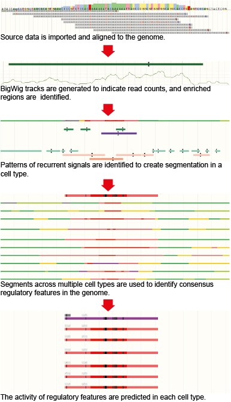
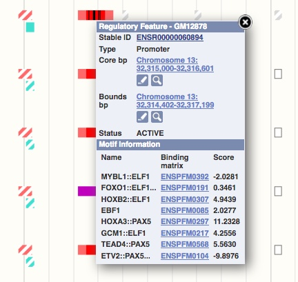

The Ensembl Regulatory Build (Zerbino et al. 2015) identifies a genome-wide set of regions that are likely to be involved in gene regulation.

Ensembl first imports publicly available data from different large epigenomic consortia (currently includes ENCODE, Roadmap Epigenomics and Blueprint). All high-throughput sequencing data sets are then uniformly processed to generate signal tracks in bigWig format and enriched regions (peaks).
A genome segmentation algorithm is then applied across all epigenomic assays for those cell types for which a minimum set of assays is available. This minimum set includes six histone modification assays: H3K4me1, H3K4me3, H3K9ac or H3K9me3, H3K27ac, H3K27me3 and H3K36me3. The segmentation step first defines a fixed number of recurrent signal patterns across all datasets, called states, and then assigns one of these states to each bp across the genome for each cell type.
For each state of each segmentation, we create a summary track which represents the number of cell types that have that state at any given base pair of the genome. The overlaps of this summary function with known features (transcription start sites, exons) and experimental features (CTCF binding sites, known chromatin repression marks) are used to assign a preliminary label to that state. For practical purposes, this annotation is then manually curated. The labels used to functionally annotate the states are:
We first determine a cell type independent functional annotation of the genome, referred to as the Regulatory Build, which summarises the function of genomic regions, known as regulatory features.
To determine whether a state is useful in practice, it is compared to the overall density of transcription factor binding, as these is measured by the TF ChIP-seq datasets included in the Ensembl Regulation resources. Applying increasing integer cutoffs to this signal, we define progressively smaller regions. If these regions reach a two-fold enrichment in transcription factor binding signal, then the state is retained for the build. This means that although all states are annotated, not all are used to build the Regulatory Build.
For any given segmentation, we define initial regions. For every functional label, all the state summaries that were assigned that labelled and judged informative are summed into a single function. Using the overall TF binding signal as true signal, we select the threshold which produces the highest F-score.
We then merge the regulatory features across segmentations by annotation.
Some simplifications are applied a posteriori:
In addition to the segmentation states, which are essentially derived from histone marks, we integrate independent experimental evidence:
For each cell type the regulatory features are assigned labels to describe their activity levels. For each cell type and each regulatory feature defined in the Regulatory Build, we check whether there is a segmentation state or experimental evidence (TF binding from ChIP-seq data or open chromatin from DNase-seq data) that could be used to test the activity of this annotation. Based on this then the activity levels can be one of the following:
For each transcription factor (TF), for which a ChIP-seq data set is part of the Ensembl Regulation resources and a position weight matrix (PWM) is available, we annotate the position of putative TF binding sites within the ChIP-seq peaks.
PWMs are taken from SELEX (Jolma et al. 2010, Jolma et al., 2015, Nitta et al., 2015) and mapped to the genome using the find_pssm_dna program from the MOODS software (Korhonen et al., 2009) with the -f flag set and a permissive p-value threshold of 0.01. We then select all mappings that map onto Ensembl regulatory elements.
PWM features, also known as MotifFeatures, are visualised in the browser as black boxes within regulatory features and TF evidence peaks. Sometimes these boxes are very thin and appear as lines. Clicking on the black box will highlight specific information in the pop-up menu, such as the matching score, which is relative to the optimal site.
